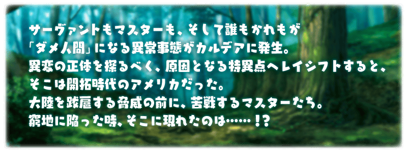
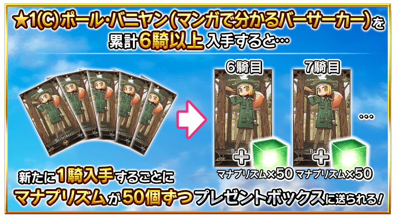

再復刻期間限定活動「復刻:All the Statesman! ～靠漫畫了解合衆國開拓史～」！
通過逐日開放的期間限定活動關卡，得到期間限定「★1(C)保羅・班揚(靠漫畫了解Berserker)」吧！
並且！通過所有活動關卡的話，可獲得限定概念禮裝「★4(SR)マンガで分かる！FGO」！
※故事與在2018年舉辦的期間限定活動「復刻:All the Statesman!～靠漫畫了解合衆國開拓史～」同樣內容。
◆活動舉辦期間◆
2020年8月10日(一) 17:30～8月17日(一) 11:59
◆活動參加條件◆
滿足以下條件的御主才能參加
・通過「特異點F 炎上汙染都市 冬木」
本活動中，第二節以後的活動關卡將逐日開放。
活動關卡的進行條件為通過前1個活動關卡。
※想要開始第一節的條件為通過序幕(プロローグ)。

【關卡的舉辦期間】
| 關卡 | 舉辦期間 |
|---|---|
|
序幕(プロローグ)開放 第一節 開放 |
2020年8月10日(一) 17:30～ 8月17日(一) 11:59 |
| 第二節 開放 |
2020年8月11日(二) 17:00～ 8月17日(一) 11:59 |
| 第三節 開放 |
2020年8月12日(三) 17:00～ 8月17日(一) 11:59 |
| 第四節 開放 |
2020年8月13日(四) 17:00～ 8月17日(一) 11:59 |
|
第五節 開放 後記(エピローグ)開放 |
2020年8月14日(五) 17:00～ 8月17日(一) 11:59 |
※關卡含序幕(プロローグ)與後記(エピローグ)全7個。 ※已持有限定概念禮裝，在通過後記可再度獲得限定概念禮裝。
◆「復刻:All the Statesman!～靠漫畫了解合衆國開拓史～」限定概念禮裝◆
|
★★★★SR |
◆再入手特典◆
過去舉辦的期間限定活動「復刻:All the Statesman! ～靠漫畫了解合衆國開拓史～」「All the Statesman! ～靠漫畫了解合衆國開拓史～」中入手過「★1(C)保羅・班揚(靠漫畫了解Berserker)」的情況，本活動中能獲得再入手特典。
入手「累計6位以上」「★1(C)保羅・班揚(靠漫畫了解Berserker)」的話，第6位以後，每新入手1位就贈送魔力稜鏡50個至禮物箱。

介紹「★1(C)保羅・班揚(靠漫畫了解Berserker)」的寶具演出！
介紹「★1(C)保羅・班揚(靠漫畫了解Berserker)」的寶具演出！
在「Fate/Grand Order」官方網站內的公告中，以影片公開寶具演出，敬請確認。
自2020年8月17日(一) 12:00，在達文西工房的「稀有稜鏡交換」永久追加「All the Statesman! ～靠漫畫了解合衆國開拓史～」的關卡開放權。
交換關卡開放權後會變得可遊玩「All the Statesman! ～靠漫畫了解合衆國開拓史～」。
◆能交換關卡開放權條件◆
通過「特異點F 炎上汙染都市 冬木」的御主對象
◆追加時間◆
2020年8月17日(一) 12:00～
◆追加道具(永久)◆
| 追加道具 | 能交換次數 | 1次交換所需的 稀有稜鏡數 |
|---|---|---|
| 「All the Statesman! ～靠漫畫了解合衆國開拓史～」關卡開放權 | 1次 | 5個 |
※在「稀有稜鏡交換」追加的「All the Statesman! ～靠漫畫了解合衆國開拓史～」關卡開放權為永久，沒有交換期限。
其他還有，「Fate/Grand Order ～5th Anniversary～」同時舉辦！
關於詳情，請自下述橫幅確認。
■「Fate/Grand Order ～5th Anniversary～」詳細情報